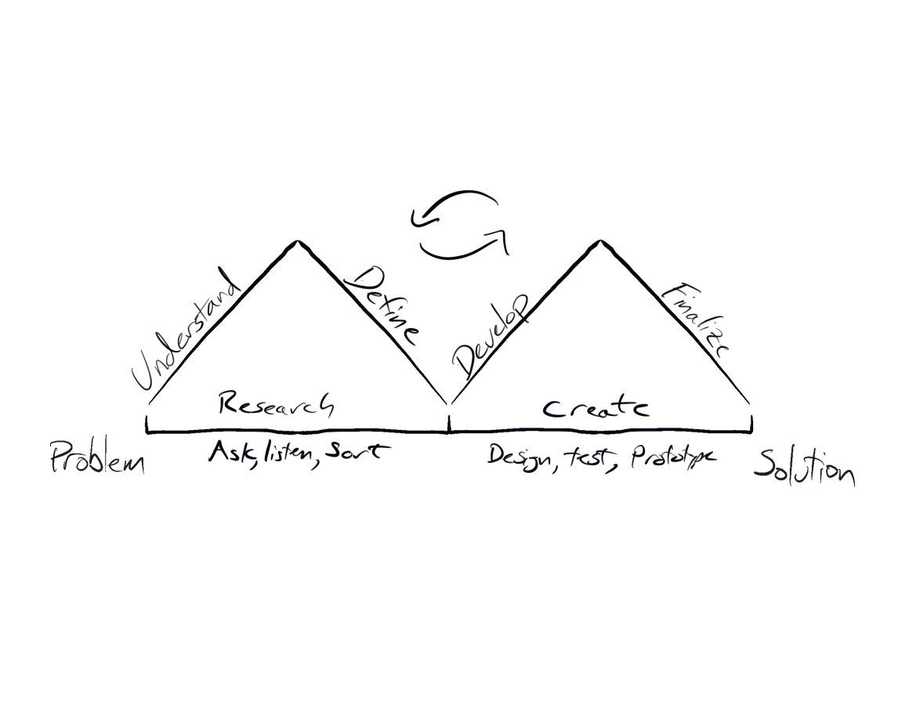
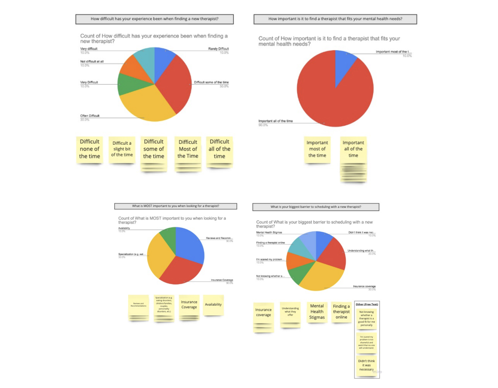
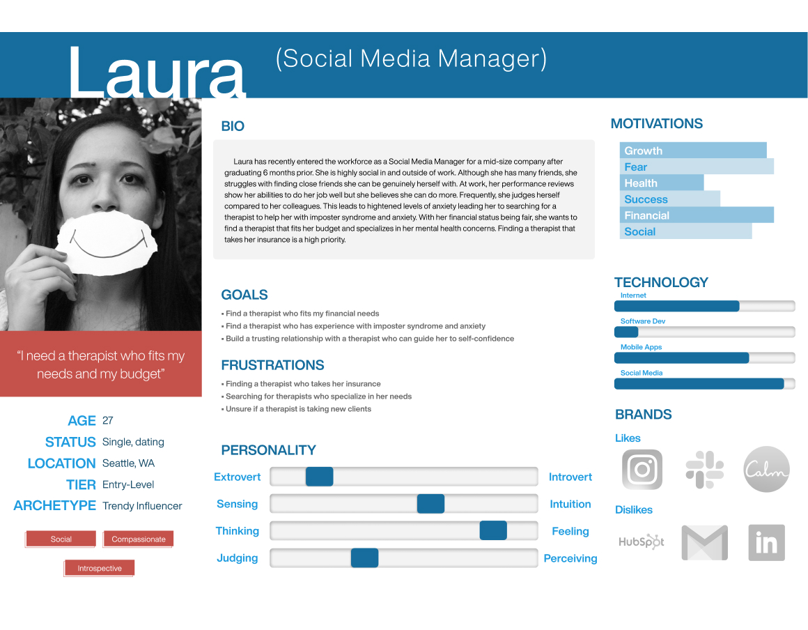
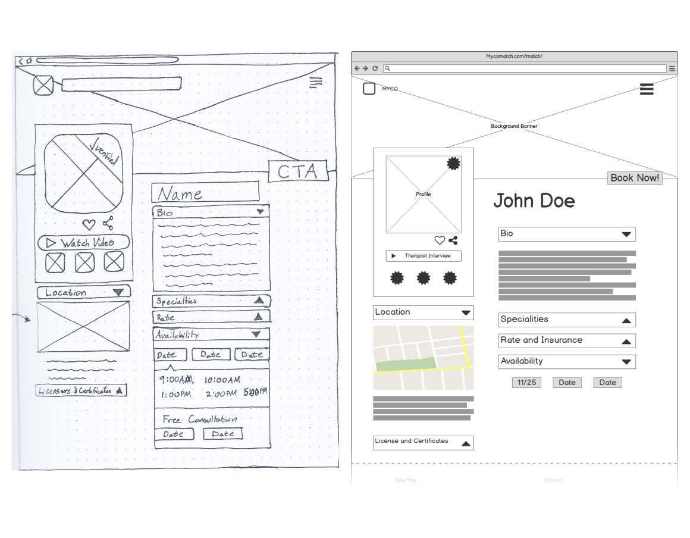
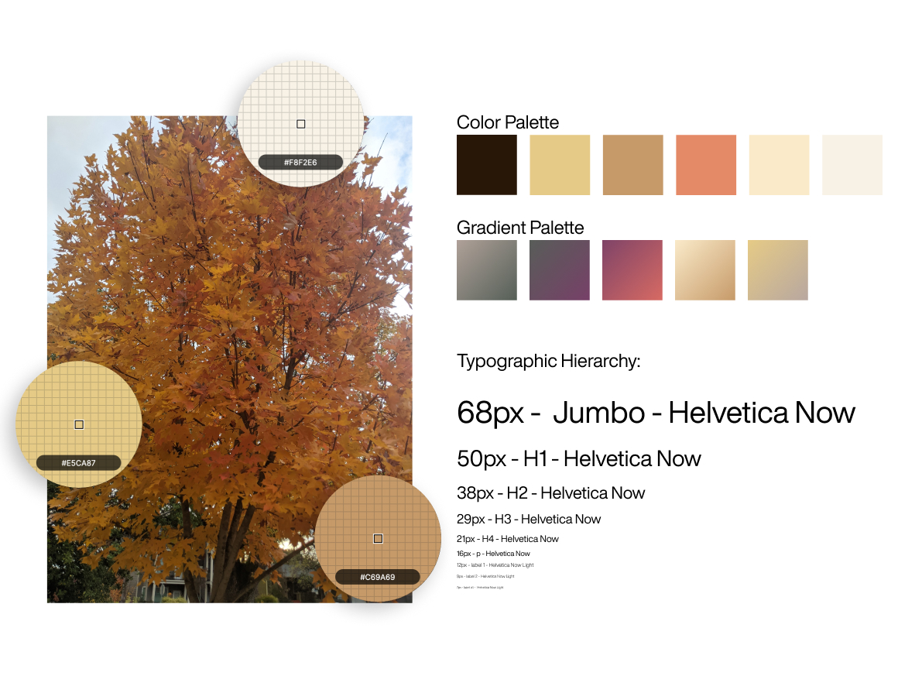
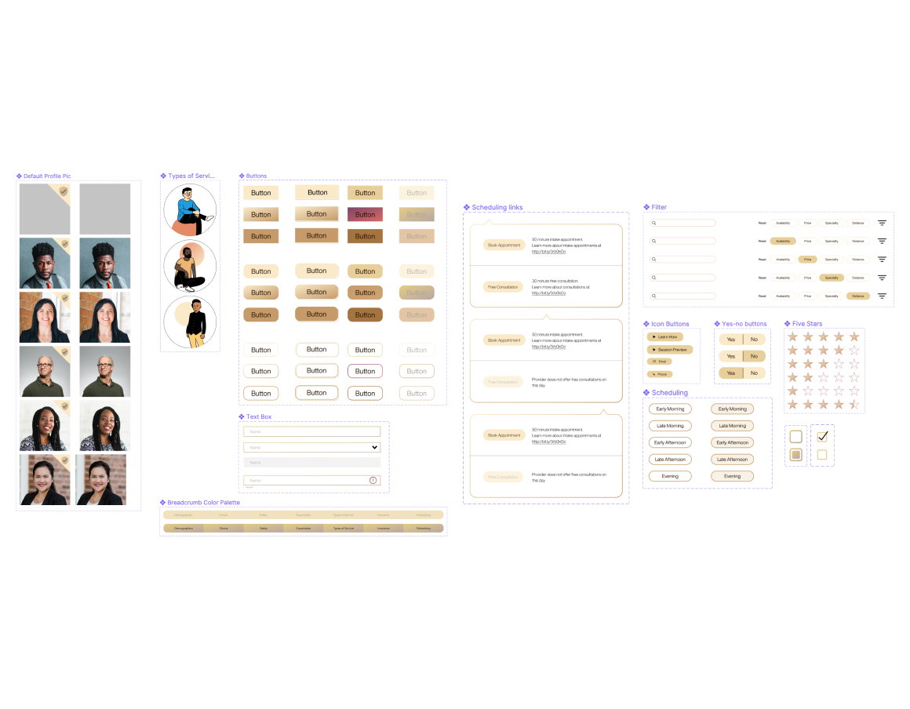
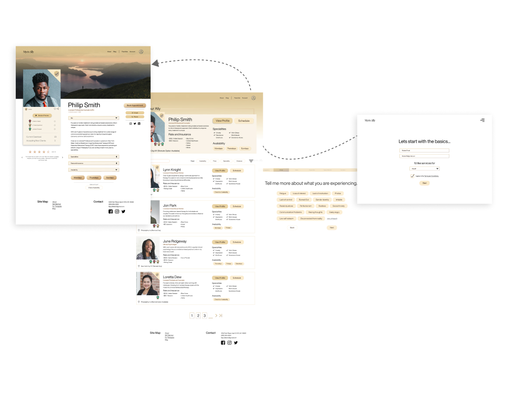

Myco Ally Web App
Myco Ally integrates machine learning architecture to connect individuals and mental health providers. Through an interactive questionnaire, Myco Ally adapts based on individuals answers to best suit their therapeutic needs.
The results include recommended match and highest rated matches based on individual needs. The platform would include scheduling integration using Calendly and provider verification.
An all-in-one mental health provider matching and scheduling tool targeting the access to care problem in the United States.
Design Process

Using the double diamond design process gives flexibility and the opportunity to learn without fully commiting to a design. Spending time to simply ask, “What will make finding a mental health professional easier for people?”, “How will this platform help people commit to scheduling?”, and “How can I keep this simple?” are common guiding questions to learn from the user.
After I learn more about the problem by using research methods, I begin building out personas, scenario maps, and user flows. This helps keep the design path specific to user needs. Once I have an idea mapped out, I build wireframes for testing usability. Using wireframes for usability testing helps iterate quickly for changes. Once I have usability tested, I move into mid and high fidelity screens for prototype and testing. After testing the mid fidelity for iterations, I finalize the high fidelity for development.
Define
Problem
People across the U.S. continue to struggle with access to mental health care. 1 in 5 adults in the U.S. struggle with mental illness each year and majority of States are under 50% of meeting people's mental health needs .
With multiple factors creating hurdles for people to find and schedule new appointments with therapists, it is common for people to abandon their search for help. From insurance to availability, the mental health system in the U.S. is increasing difficulty for people to access care. In addtion, mental health providers have different credentials, different specialties, and different types of treatments they offer leading the new potential client to feel overwhelmed by the information.
Solution
By utilizing machine learning and psychological intake questions, Myco Ally attempts to sift through the jargon, find available therapists, and match based on client needs. By offering Myco Ally service free for new and potential clients without requiring registration, people may feel more inclined to follow through with finding and scheduling with a new mental health professional.
For mental health professionals, building a profile will be free but offering a verified account service for a nominal annual fee offers a verified profile, video integration, and increased visibility in results. Professionals of all plans will be able to integrate Calendly booking links to easily manage their schedule cross platform.
Research

Conducted a small sample research to direct preliminary designs. Conducting competitive analysis, survey and questionnaires, card sorting, and NUF ratings. Findings include pain points when searching for therapists, prioritizing needs, helpful features, and competitive platform critique.
Key Findings:
- 30% of respondents answered 3 out of 5 and 4 out of 5 difficulty rating in finding a new therapist
- 80% of respondents answered 'specialization' as the most important factor in selecting a new therapist
- 30% of respondents identifed insurance as the biggest barrier to scheduling with a new therapist
Empathy Map
Before jumping in to build personas, I attempt to empathize with my users by using empathy maps. I narrowed my users down to two main groups; the quality over quantity user and the financially struggling user. I chose these two primary users based on user research findings looking for specialization (quality) insurance coverage (financial).
Using empathy maps, I’m able to brainstorm quickly and narrow down the characteristics of each persona. Using empathy maps also helps me understand the actions, thoughts, emotions, and social perspectives of each user.
User Personas

User Journey
Developing a journey based on persona characteristics helps put myself in the user’s shoes. Identifying possible pain points and solutions, emotional connections, opportunities, and planning for where certain features will reside.
User Flow
User flow for the main feature (matching) helps build the possible outline and sequence of questions. From basic demographics to clinical questions, the line of questioning should keep the user engaged and reduce bounce rate. By using interactive steps, such as the type of service screen, keeps the user engaged in the content opposed to just clicking buttons and filling text boxes.
Using this as a maleable outline helps the iterative process once testing comes into play. Being open to changes without feeling fully commited to a design helps produce a quality product based on the user needs opposed to the designer’s perception of needs.
Wireframes
After research and understanding users, I begin with quick sketches of possible features and build screens around the features. Using simple pencil and paper, I sketch several ideas quickly. I tend to iterate sketch ideas until I settle on an idea.
Once I have a general idea of screens, I’ll use design platforms such as Balsamiq to build out lo-fi wireframes. This is also an iterative process as I am able to see layouts better using platforms and import them to test on devices and web apps.

Usability Testing
Once I have a set of wireframes I’m comfortable with, I build out a prototype using the wireframes for usability testing. This helps me confirm or identify necessary changes to improve usability before building out mid- to high-fidelity screens.
Results confirmed majority of the usability needs except the types of service screen. Changing the copy around ‘hybrid’ to ‘modern’ and using plan language to describe the therapies helped users determine the therapy they are most interested in.
Style Guide

During testing, I am also beginning to discover the style guide informing the color palette and typography. Considering Myco Ally is a mental health app, I am wanting to invoke the feeling of warmth, support, and welcoming change. In the PNW of the U.S., the fall is a time to get out the warm coats and watch the leaves change. Using colors from changing leaves helped pick the color palette
As a licensed therapist myself, communicating clearly and directly with empathy is a trait important to mental health. Using typography that is modern and exhibits clarity is why I chose Helvetica Now.
Compenent GUI and Variants

Building out components and varients before and during high fidelity mockup design helps quickly make changes for iteration. I try to identify all of the components prior to building out high-fidelity mockups for consistency, however new components and varients can be added as the high-fidelity mockups come into fruition.
Landing Page Mockup and A/B Testing
Judging a book by it’s cover does have some truth. Making the landing page appeal to users on first glance helps convert users to using the web app function. Building out two landing page mockups and having users decide which page they liked most decided the aesthetic and feel.
High Fidelity Mockups

After I’ve finished research, tested usability, created the style guide, and identified the emotion of the product, I move to build out several high fidelity mockups. This can be the lengthiest part of my process so I put emphasis on my research before spending the time to build out the high fidelity mockups.
Check out this project on Behance


{kind=link}
{kind=link}
{kind=link}
{kind=link}